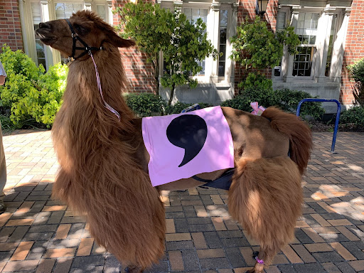

What is csv,conf?
csv,conf is a community event for datamakers from all around the world. At csv,conf, we get together to discuss open data, and how data can be used to solve problems across open source, journalism, science, government, and beyond! Over two days, attendees will have the opportunity to learn about ongoing work, share skills, exchange ideas (and stickers!) and kickstart collaborations. The rest of the week will be dedicated to parallel events featuring open data and open scholarship initiatives, communities, and projects. We welcome you to join us for the 7th year! Register at http://csvconfv7.eventbrite.com
Sponsors
Thank you to our generous sponsors for supporting csv,conf,v7!

|
Save the date - ENGLISH
Csv,conf comes to Buenos Aires!
Save the data/date! csv,conf,v7 will be held in Buenos Aires (Argentina) from April 19 to 20, 2023.
csv,conf is a community event for datamakers from all around the world. At csv,conf, we get together to discuss open data, and how data can be used to solve problems across open source, journalism, science, government, and beyond!
csv,conf is a community conference that is about more than just comma-separated-values - it brings together a diverse group to discuss topics including data sharing, data ethics, data analysis and more. Over two days, attendees will have the opportunity to learn about ongoing work, share skills, exchange ideas (and stickers!) and kickstart collaborations. The rest of the week will be dedicated to parallel events featuring open data and open scholarship initiatives, communities, and projects. We will be soon sharing more updates about the program and ticket registration, follow us on Twitter @CSVconference to stay tuned.
This is a very special edition as it’s the first time the event takes place in the Southern hemisphere. We hope this will encourage and increase the participation of the Latin American community in the conference, as we know there’s a strong open movement in the region. Previous conferences took place in Berlin, Portland and online. Check our YouTube channel to watch previous years’ talks.
If you are passionate about data and its application to society, this is the conference for you! The call for session proposals is open until November 25, 2022, and we encourage talks about new and interesting ways of using data (like how a plain-text file format led to a crossword scandal or how a spreadsheet turned into a critical data infrastructure to monitor COVID-19 infections).
We are happy to answer all questions you may have or offer any clarifications if needed. Feel free to reach out to us on csv-conf-coord@googlegroups.com, on Twitter @CSVconference, or our dedicated community Slack channel.
We are committed to diversity and inclusion, and strive to be a supportive and welcoming environment to all attendees. To this end, we encourage you to read the Conference Code of Conduct that we will be enforcing.
Last but not least, csv,conf is a group effort to put on a non-profit, community conference with dozens of people putting in time, including but not limited to the 2023 organizing team:
Elaine Wong, Canadian Broadcasting Corporation
SherAaron Hurt, The Carpentries
Marisa Miodosky, Open Heroines
Julieta Millan, Universidad de Buenos Aires
Gabi Mejias, DataCite
Lilly Winfree, data.world
Naomi Penfold, Invest in Open Infrastructure
Lai Yi Ohlsen, Measurement Lab
Yanina Bellini Saibene, rOpenSci
Sara Petti, Open Knowledge Foundation
Milagros Miceli, DAIR & Weizenbaum Institute
Patricio Del Boca, Open Knowledge Foundation
John Chodacki, California Digital Library
We look forward to hosting you in Buenos Aires next year!

Participants of csv, conf,v5 (2019) in Portland, USA.

Rojo the Comma Llama, our official mascot invites you all to join us for the next csv, conf!
SPANISH
¡Csv, conf, llega a Buenos Aires!
Anotá y reservá esta fecha: csv,conf,v7 se celebrará en Buenos Aires (Argentina) del 19 al 20 de abril de 2023.
csv,conf es un evento para la comunidad de creadores y gestores de datos de todo el mundo. ¡En csv,conf, nos reunimos para debatir sobre los datos abiertos, y cómo los datos pueden ser utilizados para resolver problemas a través del código abierto, el periodismo, la ciencia, el gobierno, y más allá!
csv,conf es una conferencia organizada por la comunidad que va más allá de los valores separados por comas: reúne a un grupo diverso para debatir temas como el intercambio de datos, la ética de los datos, el análisis de datos, entre tantos otros. Durante dos días, los asistentes tendrán la oportunidad de conocer el trabajo en curso, compartir conocimientos, intercambiar ideas (¡y calcos!) y comenzar a colaborar. El resto de la semana se dedicará a eventos paralelos en los que se presentarán iniciativas, comunidades y proyectos de datos abiertos y conocimiento abierto. Pronto compartiremos más información sobre el programa y el registro de entradas, seguinos en Twitter @CSVconference para estar al tanto.
Se trata de una edición muy especial, ya que es la primera vez que el evento se celebra en el hemisferio sur. Esperamos que esto anime y aumente la participación de la comunidad latinoamericana en la conferencia, porque sabemos que existe un fuerte movimiento abierto en la región. Las conferencias anteriores tuvieron lugar en Berlín, Portland y en línea. Podés consultar nuestro canal de YouTube para ver las charlas de años anteriores.
Si te apasionan los datos y su aplicación a la sociedad, esta conferencia es para vos. La convocatoria de propuestas de sesiones está abierta hasta el 25 de noviembre de 2022, y animamos a que se presenten charlas sobre formas nuevas e interesantes de utilizar los datos ( por ejemplo, cómo un formato de archivo de texto plano dio lugar a un escándalo de crucigramas o cómo una hoja de cálculo se convirtió en una infraestructura crítica de datos para medir las infecciones de COVID-19).
Nos encanta responder a todas las preguntas que puedas tener y ofrecerte cualquier aclaración si es necesario. No dudes en ponerte en contacto con nosotros en csv-conf-coord@googlegroups.com, en Twitter @CSVconference o en nuestro canal de Slack dedicado a la comunidad.
Nos comprometemos con la diversidad y la inclusión, y nos esforzamos por ser un entorno solidario y acogedor para todas las personas que participen. Por eso, te pedimos que leas el Código de Conducta que aplicaremos en la Conferencia.
¡Esperamos recibirte en Buenos Aires el año que viene!
PORTUGUESE
csv,conf,v7 está chegando a Buenos Aires!
Anote e guarde esta data: csv,conf,v7 será realizada em Buenos Aires (Argentina) de 19 a 20 de Abril de 2023.
csv,conf é um evento para a comunidade de criadores e gestores de dados de todo o mundo. No csv,conf, nos reunimos para discutir dados abertos, e como os dados podem ser usados para resolver problemas através de código aberto, jornalismo, ciência, governo, e muito mais!
csv,conf é uma conferência organizada pela comunidade que vai além dos valores separados por vírgulas: reúne um grupo diversificado para discutir temas como compartilhamento de dados, ética de dados, análise de dados, entre muitos outros. Durante dois dias, os participantes terão a oportunidade de conhecer o trabalho em andamento, compartilhar conhecimentos, trocar ideias (e adesivos!) e começar a colaborar. O restante da semana será dedicado a eventos paralelos com dados abertos e iniciativas de conhecimento aberto, comunidades e projectos. Em breve estaremos compartilhando mais informações sobre o programa e o registo de ingressos, siga-nos no Twitter @CSVconference para se manter actualizado.
Esta é uma edição muito especial, pois é a primeira vez que o evento será realizado no hemisfério sul. Esperamos que isto incentive e aumente a participação da comunidade latino-americana na conferência, pois sabemos que existe um forte movimento aberto na região. Conferências anteriores foram realizadas em Berlim, Portland e online. Pode conferir nosso canal no YouTube para ver as palestras dos anos anteriores.
Se você é apaixonado por dados e sua aplicação à sociedade, esta conferência é para você. A chamada para propostas de sessão está aberta até 25 de Novembro de 2022, e encorajamos conversas sobre novas e interessantes maneiras de usar os dados (por exemplo, como um formato de arquivo de texto simples levou a um escândalo de palavras cruzadas ou como uma planilha se tornou uma infra-estrutura de dados crítica para medir infecções COVID-19).
Estamos à disposição para responder quaisquer perguntas que você possa ter e oferecer qualquer esclarecimento, se necessário. Sinta-se à vontade para entrar em contacto connosco em csv-conf-coord@googlegroups.com, no Twitter @CSVconference ou em nosso canal Slack dedicado à comunidade.
Estamos comprometidos com a diversidade e a inclusão e nos esforçamos para ser um ambiente de apoio e acolhimento para todos os que participam. Portanto, pedimos que leia o Código de Conduta que aplicaremos na Conferência.
Esperamos recebê-lo em Buenos Aires no próximo ano!